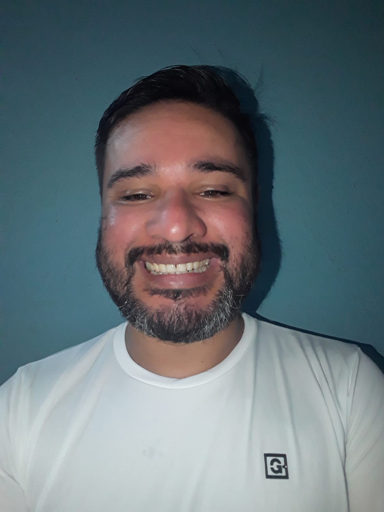

MARIO ALBERTO GIRARDI
Posadas-Misiones
CCP: 3300 Tel. Cel. : +54 9 3764 368510
Direccion : Avda. Aguado 2165, entre Magaldi y Acevedo
Correo Electronico : ennmmanuelle123@gmail.com
Descripcion personal
Como estudiante de desarrollador Web, me gustaria pertenecer algun dia a un grupo de trabajo para poder aplicar mis conocimientos
y continuar en el camino del aprendizaje y adquirir experiencia en un entorno real .
Educacion
- Terciario completo: Titulo Despachante de Aduanas.
- Diseñador grafico y Tecnico en reparacion de PCs.
- Carrera universitaria incompleta: 3 años de la carrera CPN en el Campus de Ciencias Economicas de Misiones.
- Secundario completo, terminado en 2004. Escuela de Comercio numero 6 Mariano Moreno, de Posadas-Misiones Argentina.
Eperiencia Laboral
- Vendedor en Girardi Gas SRL : atencion al publico, venta-distribucion-cobro de mercaderia.
- Estiba en Tupy SA : estiba y acomodamiento en palets de bebidas.
- Repositor para DOS ANCLAS a travez de ManPower: control de etiquetas, distribucion y posicionamiento en gondolas.
- Cadete en Girardi Gas SRL : facturacion, depositos y control de documentos.
Skills
- Trabajo en Equipo: se trabajar en equipo, realizar tareas grupales locales o remotas.
- Resolucion de problemas: estoy acostumbrado a lidiar con el stress cotidiano del trabajo, llegar a acuerdos y resolver inconvenientes.
- Adaptable: se adaptarme a los cambios del entorno laboral.
- Ingles : intermedio.
- Portugues : intermedio(hablante).
- Guarani : lengua secundaria materna.
Hoobies
- Juego futbol, juego 2 o 3 veces por semana con amigos y familiares.
- Me gusta viajar, aunque ultimamente no he viajado mucho.
- Me encanta el Paddel y el Volley, en general todo tipo de deporte.
- Andar en bicicleta, todos los dias a la mañana, como rutina.
- Cuando hay tiempo, jugamos un shooter, un moba o MMORPG con amigos a travez de Steam y Discord
Espectativas
Siempre desde muy chico me intereso la tecnologia, y tenia curiosidad por entender como funcionaban las cosas que escapaban a mis conocimientos.
Pero la vida y circunstancias me llevaron para otro rumbo, pero aun asi nunca perdi la esperanza; y fue asi como empeze a indagar en el mundo de la programacion
donde aparentemente todo era color y magia. Pero toda magia tiene una tecnologia detras que la hace posible, y no debe ser facil: decia yo por dentro. Fue entonces,
que me di cuenta que con solo estudiar de aqui y para alla no bastaba. Y encontre de casualidad a Henry, un bootcamp
que en un principio promete enseñarte y capacitarte para poder insertarte en el ambito laboral de la programacion. Y me parecio interesante la propuesta, apostar a la gente
capacitarla y permitirle alcanzar un sueño y llegar los 2; tanto el bootcamp como uno como persona, a desarrollarse y ayudar a otras personas.